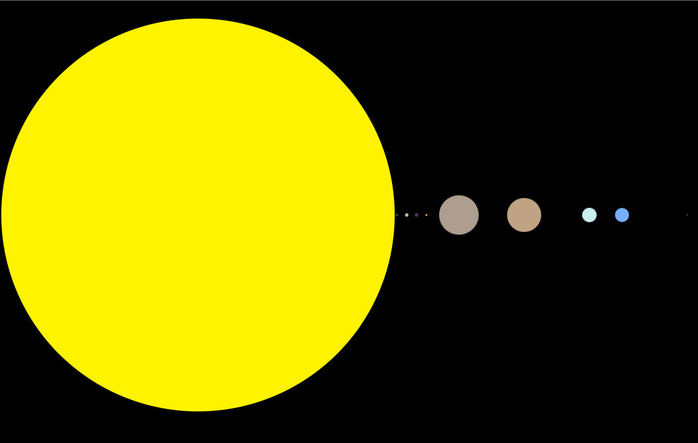

solar system

A play on scales and human perception.
A play on scales and human perception.
For a series of tutorials on gist and bl.ocks.org I will be writing journalism-centric d3 examples. In order to facilitate basic data visualization accompaniment to articles published by an average journalist, I'm writing them with reusability and ease of use in mind.
A zoomable sunburst partition with label and annotations allowing users to fully interact with the Oklahoma State budget.
A TOPOJSON projection of a census tract shapefile. The topology is preserved from a shapefile to allow for implementation in infographics requiring spatial dimensions. Binding data to geographic divisions allow for endless visualizations.
A choropleth map of Oklahoma with a time slider allowing the user to select a particular year's student teacher ratio to be shown. A continuous gradient and key were used to allow for precise differentiation.

A bar chart of the number of tornadoes occurring in Oklahoma from 1990 to 2013. In the wake of the devastating tornado that struck Moore, this chart accompanied an article I wrote for Oklahoma Watch. An interactive map showed touchdown locations for every tornado since 1990, the amount of fatalities, and the EF scale.
A scatterplot of the cost of attendance and student debt for Oklahoma universities. The circle sizes represent total enrollment figures with the x axis representing tuition and fee and the y axis representing the debt load of students. A third dimension of time allows the user to see the increase in cost and borrowing for students.
The Storyboarder Podcast is a radio show dedicated to writing and storytelling. My friend, Jelani Sims and I partnered for the joint venture in August of 2012. The website is designed, maintained, and coded by me from the ground up. It implements a robust back-end and content management system for podcasts, blogs and short fiction, as well as an iTunes RSS feed generation system.